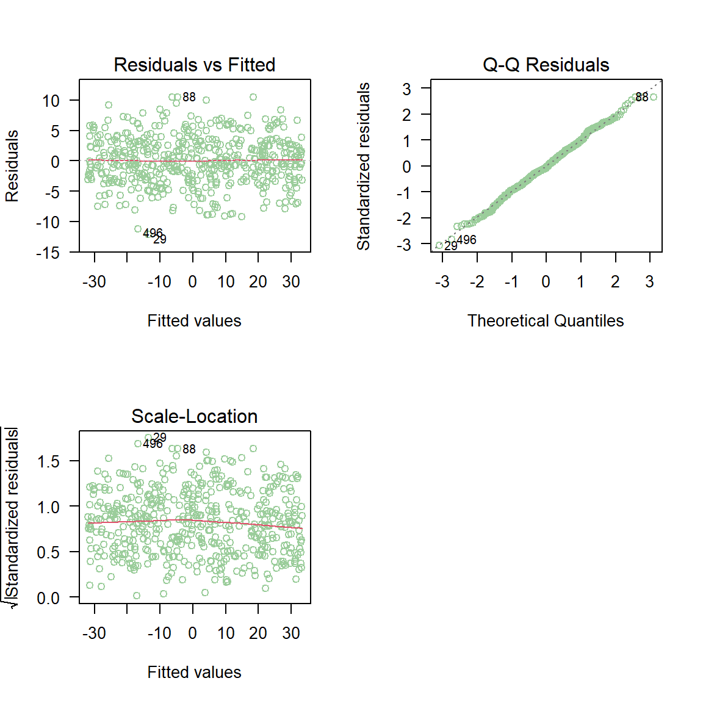

9 Diagnósticos parte I
En este capítulo se presentan varias herramientas útiles para hacer diagnósticos de un modelo ajustado.
Residuales
Los residuales en los modelos de regresión nos ayuda a:
- determinar qué tan bien el modelo explica el patrón de los datos,
- verificar el cumplimiento de los supuestos del modelo.

A continuación se muestran los diferentes tipos de residuales que se pueden definir para un modelo de regresión.

La cantidad \(w_i\) corresponde al peso o importancia de cada observación en el modelo, por defecto es \(w_i=1\).
La cantidad \(h_{ii}\) se llama leverage y corresponde al elemento \(i\) de la diagonal de la matriz sombrero o hat \(\boldsymbol{H} = \boldsymbol{X}(\boldsymbol{X}\boldsymbol{X}^\top)^{-1}\boldsymbol{X}^\top\).
La varianza \(\hat{\sigma}_{(i)}^{2}\) es la varianza estimada al NO tener en cuenta la observación \(i\)-ésima. La cantidad \(\hat{y}_{(i)}\) es la estimación de la \(i\)-ésima observación usando un modelo en el cual la observación \(i\)-ésima NO fue usada en el ajuste del modelo.
Para obtener los residuales arriba definidos tenemos las siguientes funciones:
residuals(object, type=c("working", "response", "deviance", "pearson", "partial"))
rstandard(model)
rstudent(model)Si un modelo lineal está correctamente especificado (ajustado), los residuos de Pearson serán independientes de los valores ajustados e independientes de los predictores, y estos gráficos deben ser “gráficos nulos”, es decir, gráficos sin características sistemáticas, en el sentido de que la distribución condicional de los residuos (en el eje vertical del gráfico) no debe cambiar con los valores ajustados o con un predictor (en el eje horizontal) (Fox and Weisberg 2019).
Supuestos
Los supuestos en un modelo de regresión se pueden escribir de dos formas:
Forma I
- Los errores \(e_i\) tienen distribución normal.
- Los errores \(e_i\) tienen media cero.
- Los errores \(e_i\) tiene varianza constante.
- Los errores \(e_i\) no están correlacionados.
Forma II
- La respuesta \(y\) tiene distribución normal.
- La varianza de la respuesta \(y\) es constante.
- Las observaciones son independientes \(y\).
- Relación lineal entre la variable respuesta y las covariables.
Ambos conjuntos de supuestos son equivalentes, la forma I está dirigida hacia los \(e_i\) mientras que en la forma II está dirigida hacia los \(y_i\).
Chequeando normalidad de los errores \(e_i\)
Para estudiar si lo errores \(e_i\) tienen una distribución aproximadamente normal se construyen los residuales estandarizados \(d_i\). Una vez calculados los \(d_i\) se construye un gráfico de normalidad o qqplot usando la función qqnorm, el resultado es un gráfico similar al mostrado a continuación.

En la siguiente figura se muestran los diferentes patrones que se pueden encontrar en el gráfico de normalidad para \(d_i\). Para que se cumpla el supuesto de normalidad de los errores \(e_i\) se necesita que los \(d_i\) estén lo más alineados con la recta de referencia, alejamientos severos de esta recta significa que se viola el supuesto de normalidad de \(e_i\).

Chequeando si errores \(e_i\) con media cero
Para determinar si los errores \(e_i\) tienen una media cerca al valor de cero se puede usar la función mean sobre los residuales.
Chequeando si los errores \(e_i\) tiene varianza constante
En la siguiente figura se muestra el caso de varianza \(\sigma^2\) constante u homocedasticidad y el caso de varianza \(\sigma^2\) no constante o heterocedasticidad. La homocedasticidad es el supuesto exigido en modelos de regresión.

Para chequear si los errores \(e_i\) tiene varianza constante se construye un gráfico de \(e_i\) versus \(\hat{\mu}_i\), un gráfico similar al mostrado a continuación.

En la siguiente figura se muestran los diferentes patrones que se pueden encontrar en el gráfico de \(e_i\) versus \(\hat{\mu}_i\). Para que se cumpla el supuesto de homocedasticidad se necesita que los puntos se ubiquen como una nube de puntos sin ningún patrón claro. Cualquier patrón que se observe es evidencia de que no se cumple el supuesto de homocedasticidad.

Una analogía útil para recordar si se cumple la homocedasticidad es que el gráfico de \(e_i\) versus \(\hat{\mu}_i\) tenga una apariencia como la mostrada en la siguiente figura.

Otro gráfico útil para chequear el supuesto de homocedasticidad es dibujar un diagrama de dispersión de \(\sqrt{|d_i|}\) versus \(\hat{\mu}_i\), un gráfico similar al mostrado a continuación.

Al igual que en el gráfico de \(e_i\) versus \(\hat{\mu}_i\), se espera que no existan patrones claros en la nube de puntos.
Chequeando si errores \(e_i\) no están correlacionados
Para estudiar esta situación se debe tener la historia de los errores, es decir, el orden en que las observaciones fueron tomadas. Usando es información se puede dibujar un diagrama de dispersión del residual versus tiempo, un gráfico similar al mostrado a continuación.

En la siguiente figura se muestran los diferentes patrones que se pueden encontrar en el gráfico de \(e_i\) versus el tiempo. Para que se cumpla el supuesto de independencia se espera que los puntos se ubiquen como una nube de puntos sin ningún patrón claro.

Ejemplo
En este ejemplo vamos a simular 500 observaciones del modelo mostrado abajo, luego vamos a ajustar un modelo correcto a los datos y por último vamos a realizar el análisis de residuales para saber si el modelo fue bien ajustado.
\[\begin{align*} y_i &\sim N(\mu_i, \sigma^2) \\ \mu_i &= 4 - 6 x_i \\ x_i &\sim U(-5, 6) \\ \sigma^2 &= 16 \end{align*}\]
Solución
Lo primero que se debe hacer es simular los datos y ajustar el modelo.
gen_dat <- function(n) {
varianza <- 16
x <- runif(n=n, min=-5, max=6)
media <- 4 - 6 * x
y <- rnorm(n=n, mean=media, sd=sqrt(varianza))
marco_datos <- data.frame(y=y, x=x)
return(marco_datos)
}
datos <- gen_dat(n=500)
mod <- lm(y ~ x, data=datos)Los gráficos de residuales explicados anteriormente se pueden obtener usando la función plot sobre el modelo ajustado mod.

En la figura anterior se observa que los puntos del gráfico de normalidad de los residuales estandarizados \(d_i\) están muy cerca de la línea de referencia. Los diagramas de dispersión entre los residuales versus \(\hat{\mu}_i\) no muestran ninguna anomalía. Por estas razones podemos asumir que los supuestos del modelo se cumplen.
plot(mod, which=1:3) para obtener los tres primeros gráficos que entrega la función plot, el cuarto gráfico no es un gráfico de residuales y por eso se evitó en el ejemplo.
Reto para el lector
Use la información del ejemplo anterior y viole alguno de los supuestos dentro de la función gen_dat o al momento de ajustar el modelo con lm. Luego construya los gráficos de residuales y compruebe que los gráficos le indicarán que algo no está bien en el modelo ajustado.
Gráficos de residuales usando car
El paquete car (Fox, Weisberg, and Price 2020) tiene unas funciones especiales para crear otro tipo de gráficos de residuales y que son útiles para identificar posibles anomalías en el modelo ajustado. A continuación las funciones para crear nuevos gráficos de residuales.
residualPlots(model): crea gráficos de los residuos de Pearson versus cada término del predictor lineal y los valores ajustados \(\hat{\mu}_i\). También calcula una prueba de curvatura para cada una de las gráficas agregando un término cuadrático y probando si se necesita el término cuadrático o no.marginalModelPlots(model): dibuje una gráfica de la respuesta \(y_i\) versus cada término del predictor lineal y los valores ajustados \(\hat{\mu}_i\).
Ejemplo
Este ejemplo corresponde al ejemplo mostrado en el capítulo 6 de Fox and Weisberg (2019).
En este ejemplo se desea ajustar un modelo de regresión para explicar la media de la variable prestige en función de las variables education, income y type, usando la base de datos Prestige del paquete car (Fox, Weisberg, and Price 2020).

Para construir los gráficos de los residuos de Pearson versus cada término del predictor lineal y los valores ajustados \(\hat{\mu}_i\) se usa la siguiente instrucción (las=1 para poner los números vertical en el eje Y).

## Test stat Pr(>|Test stat|)
## education -0.6836 0.495942
## income -2.8865 0.004854 **
## type
## Tukey test -2.6104 0.009043 **
## ---
## Signif. codes: 0 '***' 0.001 '**' 0.01 '*' 0.05 '.' 0.1 ' ' 1De la figura anterior se observa lo siguiente:
- El gráfico de residuales vs education se asemeja a un “gráfico nulo”, en la que ningún patrón particular es aparente.
- El gráfico de residuales vs income presenta una curvatura.
- El gráfico de residuales vs type (var. cuali.) presenta una apariencia de un “gráfico nulo”, todas las cajas con a proximadamente el mismo centro y extensión.
- De las observaciones anteriores parece que falta el término \(Income^2\) en el predictor lineal.
La sospecha de que falta el término \(Income^2\) se ve reforzada por la tabla que acompaña la salida de residualPlots(prestige_mod). En la línea para la variable income se tiene la prueba de hipótesis \(H_0:\) no se necesita \(Income^2\) versus \(H_A:\) si se necesita \(Income^2\). El valor-P de esta prueba es 0.004854 y por lo tanto se justifica incluir \(Income^2\).

## Test stat Pr(>|Test stat|)
## education -0.3844 0.70156
## income 0.3909 0.69680
## I(income^2) 2.1493 0.03426 *
## type
## Tukey test -2.1877 0.02869 *
## ---
## Signif. codes: 0 '***' 0.001 '**' 0.01 '*' 0.05 '.' 0.1 ' ' 1## Warning in mmps(...): Interactions and/or factors skipped
References
Fox, John, Sanford Weisberg, and Brad Price. 2020. Car: Companion to Applied Regression. https://CRAN.R-project.org/package=car.
Fox, J., and W. Weisberg. 2019. An R Companion to Applied Regression. Third. SAGE Publications, Inc.